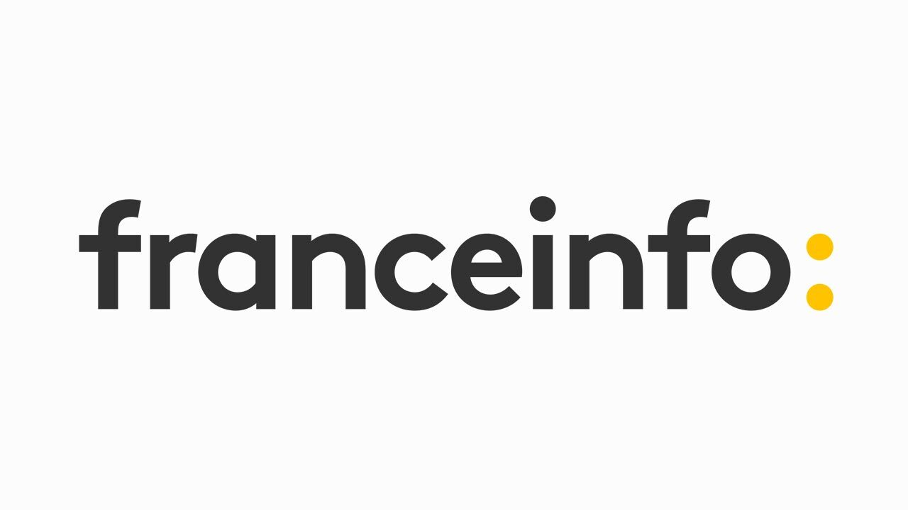

STAGIAIRE · RÉGIE
Expérience en régie

Synopsis
Cette expérience au sein de France Info avait pour objectif de découvrir concrètement les métiers techniques de la régie et de mieux comprendre leur fonctionnement dans un environnement de production audiovisuelle. En tant que futur professionnel de la production, l’enjeu était également de mieux appréhender les contraintes et les attentes des équipes techniques avec lesquelles un chargé de production est amené à travailler.
Ma contribution
Découverte des différents métiers intervenant dans la fabrication et la diffusion d’un programme en direct.
Avec les équipes TEVA, participation à l’installation de caméras à distance et au cadrage en direct, en coordination avec le réalisateur.
Avec les réalisateurs, participation à l’installation et à la préparation des différents plans de caméra ainsi qu’à la réalisation en direct à l’aide du mélangeur en régie.
Découverte également des métiers techniques liés au son et à la coordination antenne.